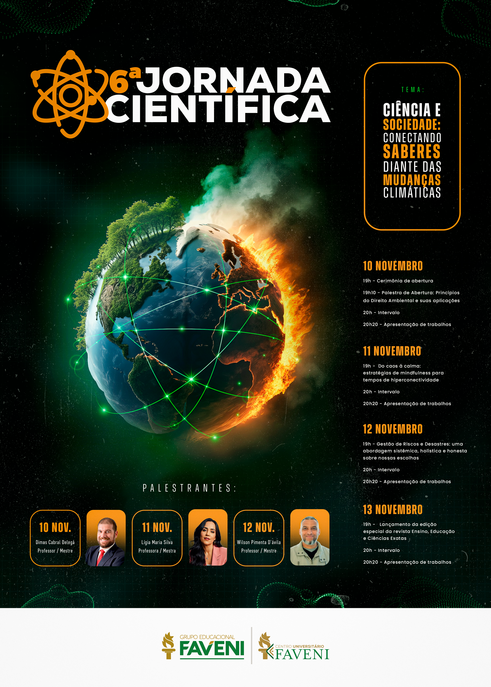

Evento científico
6ª Jornada Científica
Ciência e Sociedade
Conectando saberes diante das mudanças climáticas
10 a 13 de novembro
Contagem regressiva
00
Dias
00
Horas
00
Minutos
00
Segundos
Evento em andamento

Conheça o evento
Sobre a Jornada Científica
A Jornada Científica é um espaço de integração, aprendizado e divulgação do conhecimento acadêmico.
O evento reúne estudantes, professores, pesquisadores e profissionais para discutir temas atuais e apresentar trabalhos científicos de diferentes áreas do conhecimento.
Confira os horários
Programação
Convidados
Palestrantes
Transmissão
Evento ao vivo
Acompanhe as palestras pelo YouTube e, após o intervalo, acesse a sala correspondente à sua área de apresentação.
Apresentação de trabalhos
Salas por área
Selecione o dia do evento e escolha a sala correspondente à área de apresentação do trabalho.
Salas disponíveis
Selecione um dia
Apresentações após o intervalo
Produção científica
Submeta seu trabalho
A submissão, avaliação e publicação dos trabalhos são realizadas por meio da plataforma OJS.
Antes de enviar, consulte as normas e confira todas as orientações para os autores.